Pràctica d'instal·lació de Wordpress
Passos realitzats:
Primer he descarregat el paquet comprimit a la maquina anfitriona.
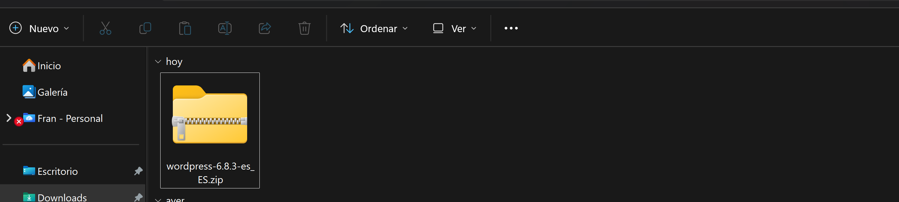
Després l'he passat a la maquina virtual que fará de servidor.
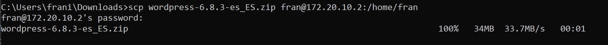
Seguidament, en el servidor l'he descomprimit.
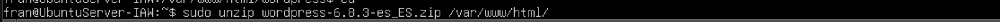
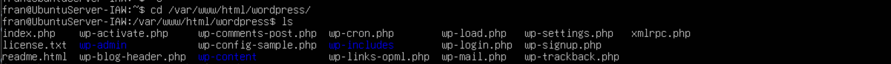
Ara el que anem a fer es canviar el propietari del directori de wordpress per a que ell mateix puga fer canvis al lloc.
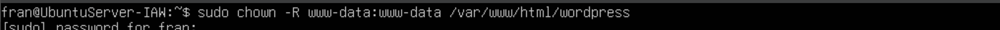
Ara, dins del phpmyadmin, per a que wordpress tinga la seua propia base de dades, anem a crear una des del usuari root.
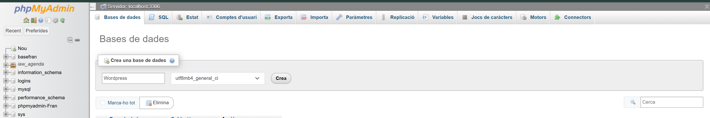
També creem un usuari per a la gestió de la base de dades de WordPress, que en aquest cas les credencials son wordpress-8448.
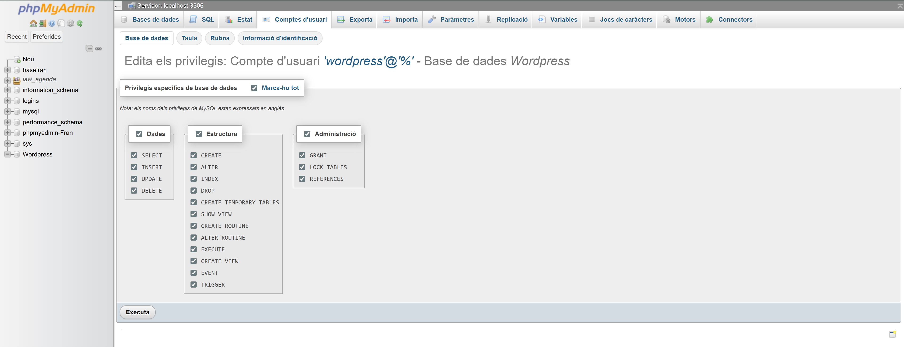
D'aquesta manera eixe usuari te estos permisos sobre la base de dades de wordpress.
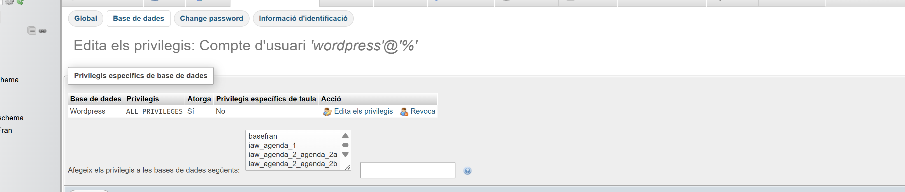
Accedim mitjançant la URL http://IPservidor/wordpress i veiem la seguent pantalla.
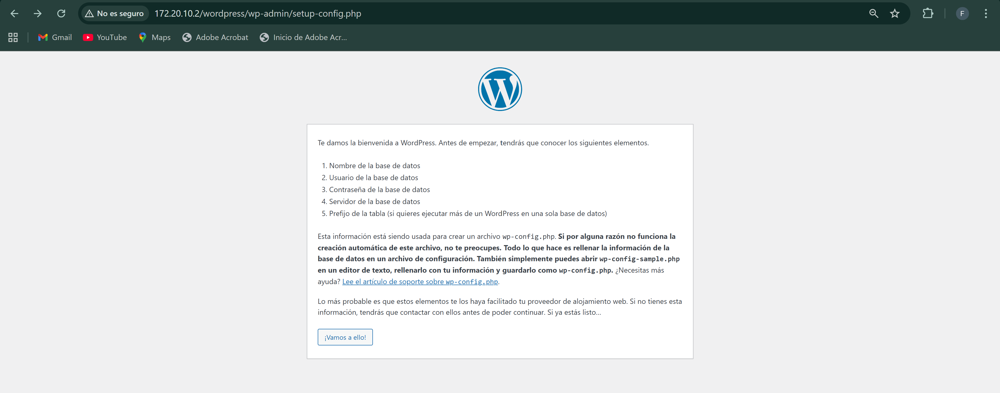
Després omplim les dades corresponents i seguim el procés d'instal·lació.
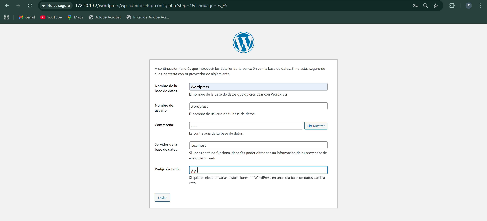
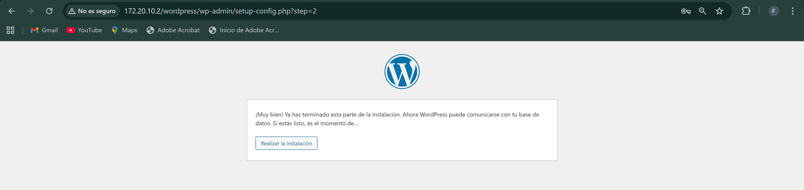
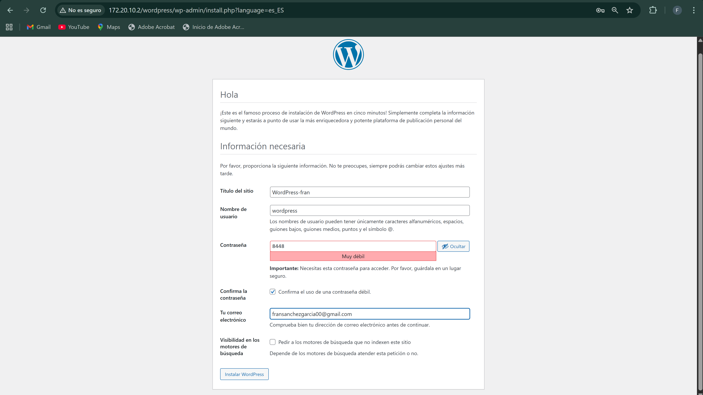
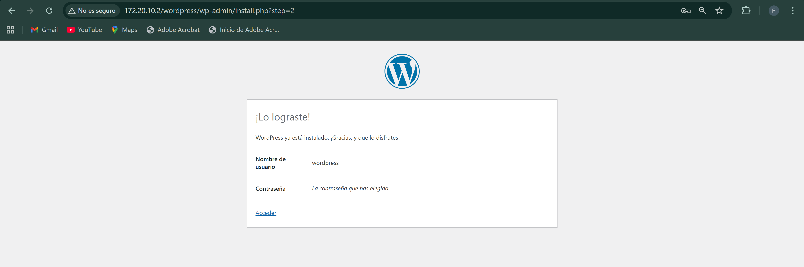
Després amb les credencials creades ja podem accedir dins del nostre WordPress.
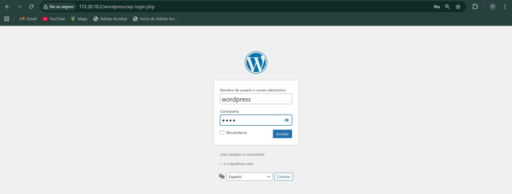
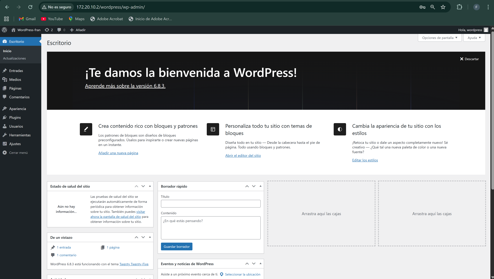
En la seguent imatge podem veure el Frontend. El frontend es la part a la que es te accés de manera publica, es a dir, el nostre lloc web.
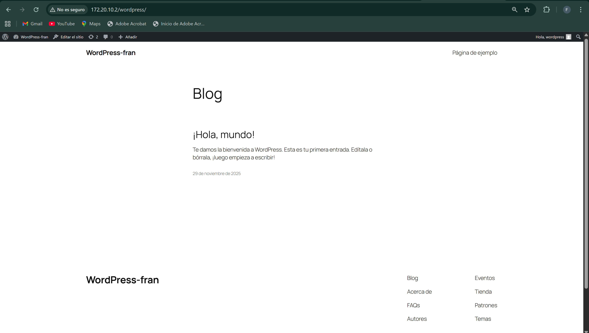
I en aquesta el Backend, que es la pantalla en la que hem ficat les credencials creades durant la instal·lació. El backend ens demana credencials per a accedir a la part d'administració.